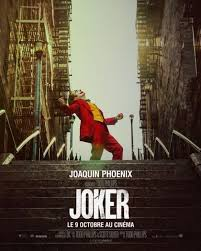

Films
Les films du moment

Taxi Driver
Le thriller de Martin Scorsese, aussi captivant qu'intrigant.

Joker
L'histoire du Joker vu de son propre point de vue.
Classiques à revoir

The Godfather
Le premier volet de la saga emblématique réalisé par Francis Ford Coppola.

Pulp Fiction
Un film culte de Tarantino qui a redéfini les codes du cinéma.